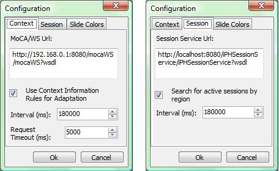

iPH - Interactive Presenter for Handhelds
Developed at:
Using iPH
Contact us and tell your experience with iPH
Using iPH with services:
- In order to use iPH with context-aware functions you need to configure it to access MoCA through MoCA/WS.
- To use the session storage function, iPHSessionService is needed.
You need a web container for Java applications like Tomcat 6. Install it and also download the JAX/WS API and configure Tomcat to look for JAR files at the JAX/WS lib folder..
Then, download the following war files and deploy them to Tomcat:
- iPHSessionService
- MoCA/WS
- Configuration information here.
The user has to configure the iPH application to access the services MoCA/WS and iPHSessionService. To do this, he/she has to access the menu option at Edit > Configuration and insert the addresses to the services, like the example below.
